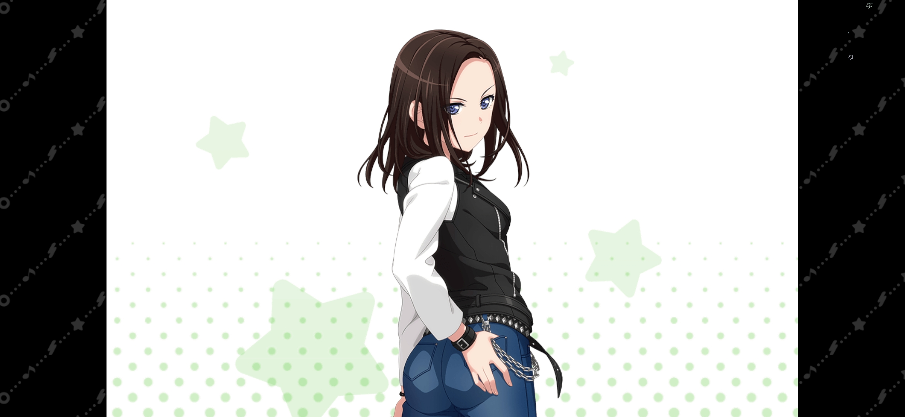
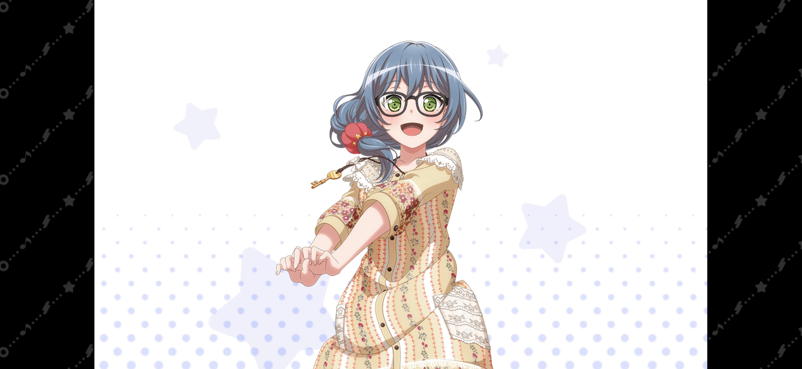
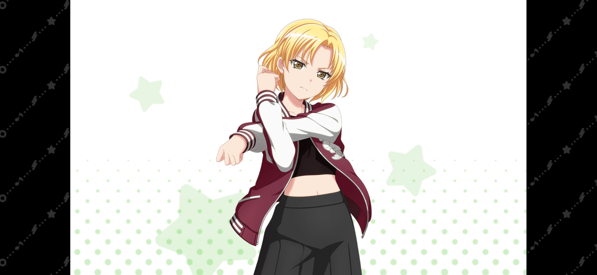
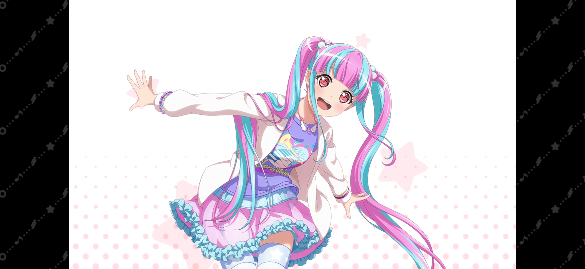
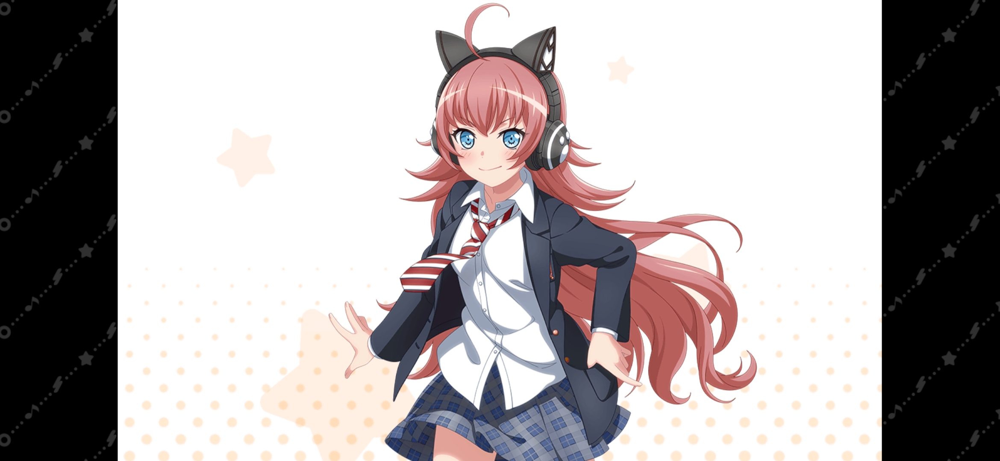

| 圖片 | 姓名 | 擔當 | 聲優 | 生日 | 身高 | 簡介 |
|---|---|---|---|---|---|---|
|  | 和奏瑞依 | 主唱兼貝斯手 | Raychell | 1月13日 | 170cm | 自幼喜愛歌唱，經常做和聲與假歌(根據譜面錄製歌曲demo，為實際歌手提供試聽)的打工，有時也會在著名歌手的幕後樂隊裡演奏貝斯。 RAS出名後有粉絲會為了看LAYER表演而去看她擔當支援的演出。 言行成熟，會與人保持距離感。 與花園多惠是青梅竹馬。 雖然是一個看起來相當有威壓感的角色，但其實相當溫柔。 小時候搬家時因為看到多惠的眼淚而決定再回來。 與多惠約定了不會哭泣，即使心裡感到難過，也沒有掉一滴眼淚。 不擅長喝苦味飲料（如黑咖啡），也不喜歡喝碳酸飲料和茶，原因分別是「會刺激喉嚨」和「喝了之後嗓子裡會有異物感」。 |
|  | 朝日六花 | 主音吉他手 | 小原莉子 | 7月17日 | 155cm | 羽丘女子學園高二學生，學生會書記。 岐阜縣出身。雖然是飽嘗艱辛的幸運E，但總是什麼事都全力以赴。 在商店街一角的Live House "Galaxy"打工時，強烈地期望著自己也能組樂隊。 Poppin'Party的鐵粉。 |
|  | 佐藤益木 | 鼓手 | 夏芽 | 5月12日 | 168cm | 有在作支援鼓手的工作。 曾經加入過樂團，但總是對其他成員玩音樂的態度不滿意，所以都待不久。 在進入RAS前並沒有能讓她放手打鼓的地方。 小時候經常跟父親和他的樂隊成員們一起混，耳濡目染地學到了許多玩音樂、玩樂團該有的精神品質。也因此先後開導過RAS的所有成員。 平常的時候會在"Galaxy"的舞台上獨自練鼓，直到某日被CHU²相中加入RAS。RAS成員中最年長者。 雖然性格堅定可靠，但沉醉於演奏時會即興製造非常喧鬧的高難度聲音，十分可怕而被稱為「狂犬」。 |
|  | 鳰原令王那 | 鍵盤手 | 倉知玲鳳 | 3月25日 | 161cm | 發揮自己學習過電子琴的經驗，改變愛好成為了鍵盤手。 特別在意「可愛」，對「可愛」有強烈的執著。 一直都有著待人明朗的性格。 喜歡的樂隊是Pastel*Palettes。 |
|  | 珠手知由 | DJ | 紡木吏佐 | 12月7日 | 150cm | 國際學校12年級的海歸子女，由於成績優秀而跳級。 能夠兼任作詞作曲的有才華的音樂製作人。 夢想是用自己最強的音樂改變世界。 儘管充滿自信並且高度專業，但也有幼稚的一面。 雖然態度傲慢卻不失禮節。 |